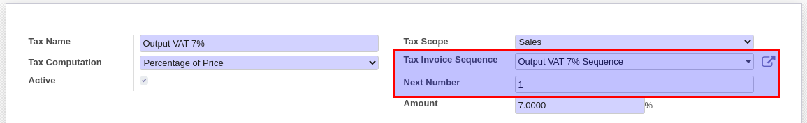

Account: Thai Tax Invoice
ภาษีมูลค่าเพิ่ม VAT
ภาษีมูลค่าเพิ่ม VAT
ภาษีมูลค่าเพิ่ม (Value Added Tax) หรือ VAT เป็นการเก็บภาษีจากการขายสินค้า หรือการให้บริการในแต่ละขั้นตอนการผลิต และจำหน่ายสินค้าหรือบริการ ทั้งที่ผลิต ภายในประเทศและนำเข้าจากต่างประเทศ…
เมื่อมีการซื้อขายสินค้า จุดที่เกิด VAT ได้มี 2 ที่ คือ ที่ Invoice และที่ Payment ขึ้นอยู่กับประเภทสินค้า
ธุรกรรมดังกล่าวที่เกิดขึ้น ระบบจะนำไปบันทึกบัญชี (Journal Entries) ตามการทำงานปกติของ Odoo ส่วนโมดูลเสริมจะช่วยบันทึกรายละเอียดของ Tax Invoice ไว้อีกตารางหนึ่งเพื่อความสะดวกในการสร้างรายงานภาษีซื้อและขายสำหรับส่งกรมสรรพากรต่อไป
ในธุรกรรมหนึ่งๆ เลขที่เอกสารที่ใช้ออกรายงานภาษี (Tax Invoice Number) จะใช้เลขที่เอกสารจากผู้ขายเป็นเลขที่อ้างอิงเสมอ หากโยงเรื่องนี้กับระบบ ERP ซึ่งการทำงานจะมีเอกสารทั้งด้านขาย (Customer Invoice, Customer Payment) และด้านซื้อ (Vendor Bill, Vendor Payment) เลขที่อ้างอิง (Tax Invoice Number) ที่บันทึกในระบบจะเป็นแบบนี้
ทั้งหมดนี้เป็นหลักการทั่วๆไปของไทย ส่วนถัดไปจะแสดงให้เห็นว่าใน Odoo ทำงานอย่างไร
Odoo 13.0
Note
เพื่อให้ผู้ใช้งานสามารถเข้าไปตั้งค่าได้ User ต้องมีสิทธ์ดังนี้
Note
ใน Odoo เรียกการบันทึก Tax ตอน Payment ว่า Cash Basis
Note
Note
โดยการตั้งค่าเริ่มต้น ระบบจะใช้เลขที่ตามหน้าเอกสารซึ่งอาจเป็น Customer Invoice หรือ Customer Payment แต่ถ้าธุรกิจมีการขายทั้งสินค้า (VAT) และบริการ (Undue VAT) จะทำให้การรันเลขที่ Tax Invoice ไม่ต่อเนื่อง ในกรณีนี้เราสามารถสร้าง Sequence ใหม่โดยสัมพันธ์กับ Sales VAT ได้ โดยระบบจะใช้เลขที่นี้ในการรันเลขที่ Tax Invoice แทนโดยไม่สนใจว่า VAT เกิดขึ้นที่ไหน


Note
กรณีของ Input VAT เลขที่ Tax Invoice จะได้รับจากผู้ขายเสมอ